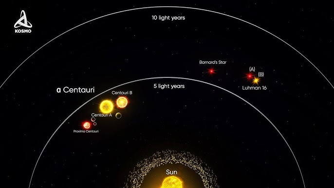
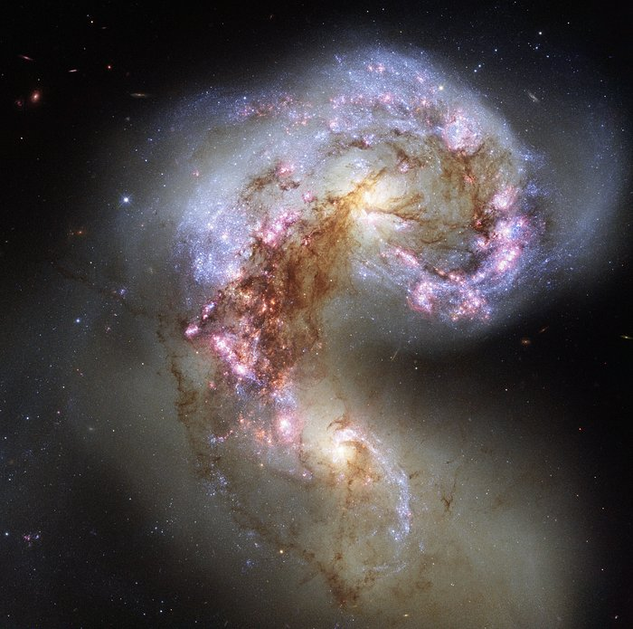

Realm 1: The Nearby Solar System
The Solar System represents our closest laboratory for understanding the fundamentals of astrophysics. By studying planetary dynamics, asteroid belts, and the interactions between planets and solar radiation, we can observe how gravity shapes trajectories and maintains orbital stability. Additionally, analyzing solar radiation and its effects on nearby bodies helps us understand phenomena such as solar winds, magnetospheres, and tidal forces, which can be applied on larger cosmic scales.
Realm 2: Stellar Neighborhood
The stellar neighborhood allows us to apply fundamental concepts such as universal gravitation and electromagnetic radiation to nearby stars. By studying exoplanets, their habitable zones, and gravitational interactions, we can understand the mechanisms governing planetary system formation beyond our own. Stellar radiation also reveals crucial information about the chemical composition and temperature of stars, helping infer the presence of atmospheres or conditions for potential life.
Realm 3: Galaxies and Clusters
On larger scales, such as galaxies and clusters, the basic concepts of gravitation and orbital dynamics expand to complex systems. Studying galactic mergers, stellar orbits in clusters, and dark matter distribution allows us to understand how gravity organizes the structure of the universe. Electromagnetic observations, from radio waves to X-rays, are essential for detecting regions of intense star formation or high-energy events, linking fundamental principles with real large-scale phenomena.
